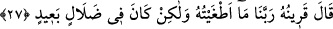

Birincisinde, “Ben aranızdan zorba ve inatçı olanlar hakkında vekil kılındım” der ve
kuşların susam tanelerini yakaladığı gibi saflar arasında onları yakalar. Orada onlardan
hiç kimseyi bırakmaz. İkinci defa “ey mevkıf ehli ben Allah ve Rasulüne eziyet edenler
hakkında vekil kılındım” diye bağırır ve kuşların susam tanelerini yakaladığı gibi
mahlûkat arasından onları yakalar. Onlardan hiç kimseyi bırakmaz. Üçüncü defa “ey
mevkıf ehli ben Allah’ın yarattığı gibi bir şeyler yarattıkları zehâbına kapılanlar
hakkında vekil kılındım” diye bağırır ve tasvir ehlini yakalar. Onlar kiliselere tapılsın
diye resim yapanlar ve putları tasvir edenlerdir. Âyette “kendi ellerinizle
yonttuklarınıza mı ibadet ediyorsunuz?” (Saffât, 37/95) buyurulmuştur. Onlar, ahşap
ve taşları Allah’tan başkasına tapınmak için yontuyorlardı. O boyun, onları kuşların
susamları yakaladığı gibi safların arasında yakalar. Allah onları diğerleri arasından alır
ve aralarında ibadet edilme maksadı olmadan tasvir edenlerin bulunduğu insanlar kalır.
Ta ki onlardan da bu yaptıklarına ruh üflemeleri talep edilir. Tâbi onlar, musavvirler
hakkındaki haberde de ifade edildiği gibi, ruh üfleyemezler. Yine bu habere göre
“Allah’ın dilediği süre dururlar ve kendilerini terleme almış olduğu halde Allah’ın
onlara ne yapacağını beklerler.”
Âyette hevâ ve dünyaya işâret vardır. O ikisine ibadet eden ve Allah ile beraber
onları ilâhlaştıran kimseler hırs ve gafletle olan dünya istekleri dolayısıyla
cezâlandırılırlar.
Attar (k.s.) şöyle demiştir.
Açgözlünün nimetten gözü doymaz,
İçine ne kadar çok tahıl koysan da kalburda ne kalır ki?
27. Müşrikin arkadaşı (şeytan) der ki: Rabbimiz! Ben onu azdırmadım. Fakat
kendisi derin bir sapıklık içindeydi.
“Yanındaki dedi.” Burada atıf için “vav” yoktur. Çünkü birincisi yanında bulunan
insana yapılmış bir hitaptır ve kelama muttasıldır. Fakat ikincisi Allah’ın muhâtaba bir
ittisâli olmadan hitâp ettiği bir istînâftır. Bu da “Rabbimiz ben onu yoldan
çıkarmadım” ifadesidir. Aynı şekilde cevapta da atıf için “vav” yoktur. Bu da
“huzurumda didişmeyin ” ifadesidir. Aynı şekilde “benim huzurumda söz değişmez”
ifadesi de öyledir. Hepsi Burhanu’l-kur’an’da da olduğu gibi aynı düzen içindedir.
Yani bunları, kâfire bağlanan şeytan demiştir.
Kâşifî şöyle demiştir: Kâfiri cehenneme atmak istediklerinde, “benim ne suçum var?
Şeytan bana musallat oldu, beni kötü yola düşürdü” diye itiraz eder. Şeytanı
getirdiklerinde ise şeytan onu tekzîb eder. Hazfedilmiş olan bu tartışma ve soruya